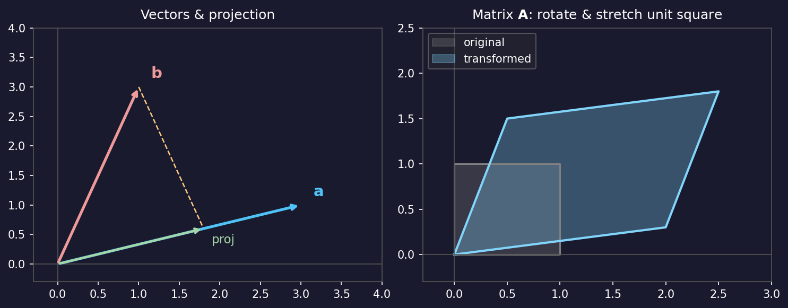
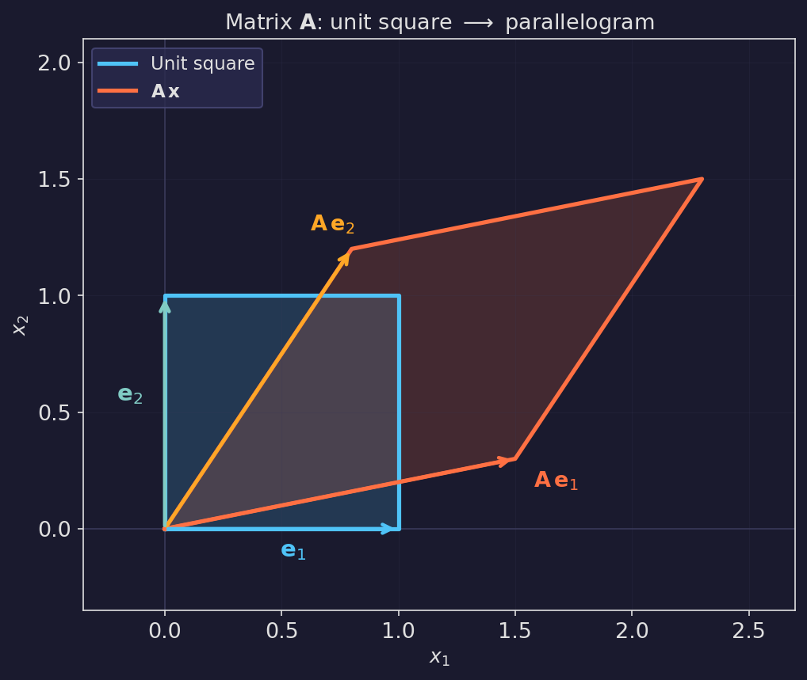
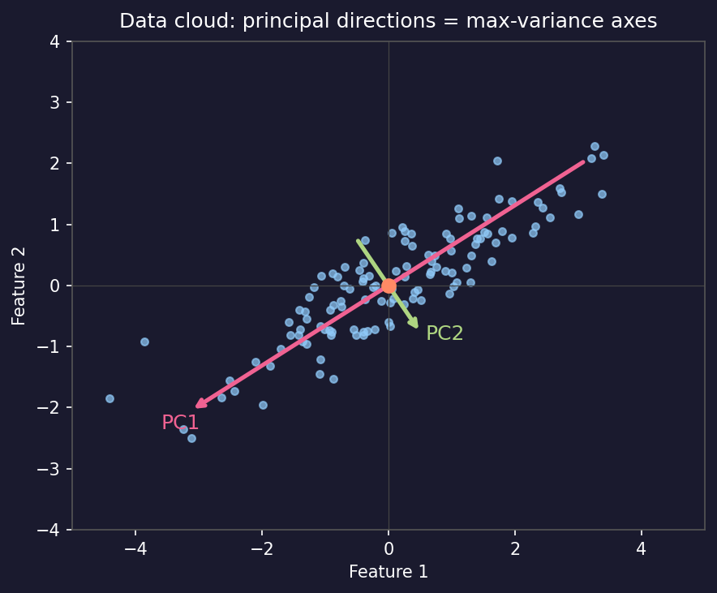
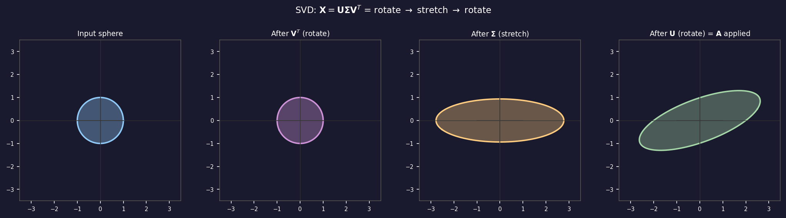
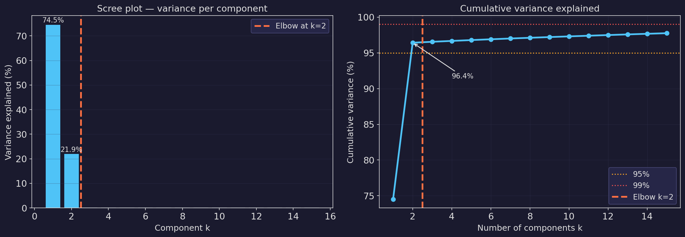
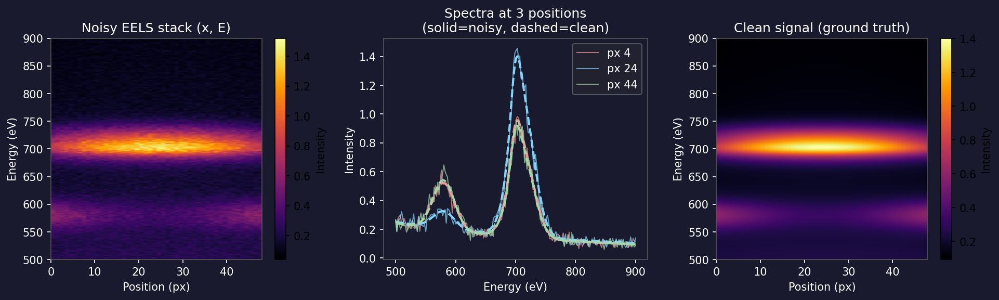
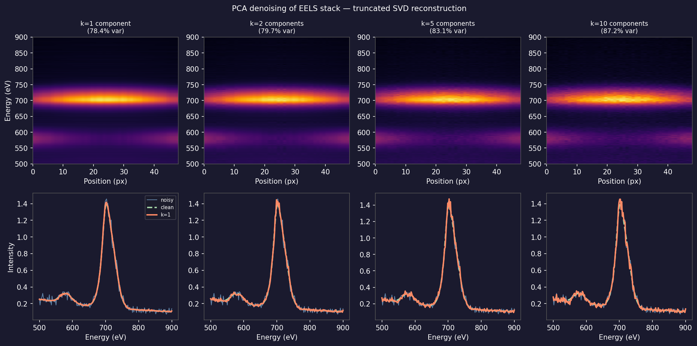
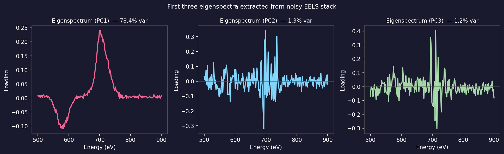
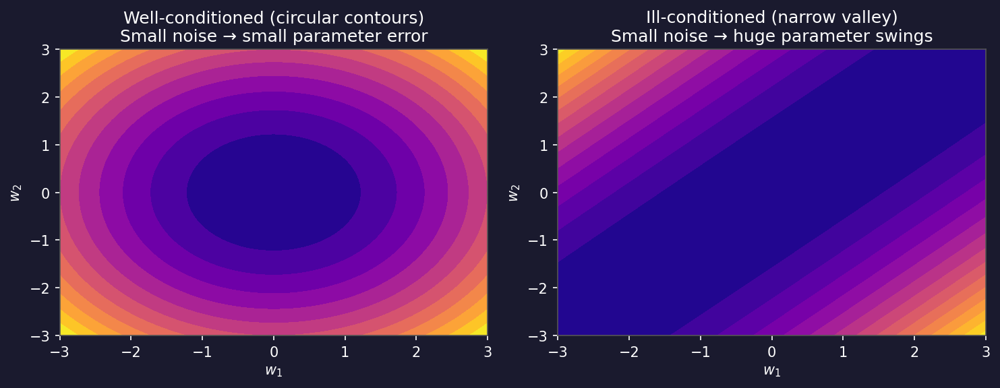

Data Science for Electron Microscopy
Week 3: Linear algebra & PCA you actually need
Prof. Dr. Philipp Pelz
FAU Erlangen-Nürnberg
Institute of Micro- and Nanostructure Research


Recap: where we left off
- Week 2: What is learning? EM data tensors, Poisson noise, SNR = √λ.
- You can now simulate a noisy STEM image, measure its SNR, and explain why dose quadruples to double it.
- Every EM pixel is a count — Poisson statistics, signal-dependent variance.
- Gap: to do anything useful with a stack of 50 000 EELS spectra, we need a compact, interpretable representation.
- Today: the minimum linear algebra to build that representation, culminating in PCA as the workhorse for EM spectral denoising.
Today’s question
- Why does PCA denoise an EELS spectrum image? Because signal lives in a low-dimensional subspace; noise spreads across all directions.
- How do we find that subspace? Singular Value Decomposition — the same three-step picture you can draw without any formulas.
- Road map: vectors & matrices as geometry (5) · projection (4) · SVD picture (5) · PCA = max-variance directions (6) · scree plot (4) · PCA denoising (6) · eigen-spectra (3) · ill-conditioning (3) · limits + forward link (2).
- Self-study:
notebooks/week03_pca_eels.ipynb— build a synthetic EELS stack, compute PCA, denoise, choose k from the scree plot.
Vectors: arrows in space
- A vector \(\mathbf{x} \in \mathbb{R}^D\) is a point (or arrow) in \(D\)-dimensional space.
- In EM: one EELS spectrum with 200 energy channels is a point in \(\mathbb{R}^{200}\).
- The dot product \(\mathbf{a}^T \mathbf{b} = |\mathbf{a}||\mathbf{b}|\cos\theta\) measures the alignment between two vectors.
- Dot product = 0 ⟹ orthogonal (90°) — the two vectors carry independent information.
- Norm \(\|\mathbf{a}\| = \sqrt{\mathbf{a}^T\mathbf{a}}\) = the length of the arrow.
Projection: the core operation

- Scalar projection of \(\mathbf{b}\) onto unit vector \(\hat{\mathbf{a}}\): \(c = \hat{\mathbf{a}}^T \mathbf{b}\).
- Vector projection: \(\text{proj}_{\mathbf{a}} \mathbf{b} = c \, \hat{\mathbf{a}}\).
- The residual \(\mathbf{b} - \text{proj}_{\mathbf{a}}\mathbf{b}\) is perpendicular to \(\mathbf{a}\).
- This decomposition — “how much lies along \(\mathbf{a}\)?” — is what PCA does in every direction.
Matrices as geometric transformations

- A matrix \(\mathbf{A}\) maps every vector \(\mathbf{x}\) to a new vector \(\mathbf{y} = \mathbf{Ax}\).
- Geometrically: \(\mathbf{A}\) rotates, stretches, and (for non-symmetric \(\mathbf{A}\)) shears space.
- The data matrix \(\mathbf{X} \in \mathbb{R}^{N \times D}\): \(N\) spectra (rows), each with \(D\) energy channels (columns).
- One row = one spectrum = one point in \(\mathbb{R}^D\).
- Convention for this week: observations in rows, features in columns.
The data matrix: EM spectra as points in high-D space

- Each EELS spectrum \(\mathbf{x}_i \in \mathbb{R}^{1024}\) is a point in 1024-D space.
- The cloud of \(N\) spectra occupies only a tiny corner of that space — most directions are empty.
- Intrinsic dimensionality: if a sample has \(K\) distinct chemical phases, the spectra approximately lie on a \(K\)-dimensional subspace.
- Key intuition: for a two-phase sample, all spectra are linear combinations of two end-members → they lie on a 2-D plane inside \(\mathbb{R}^{1024}\).
- PCA finds and extracts that plane.
Reshaping EM data into a matrix: the practical step
import numpy as np
# Simulate loading an EELS spectrum image
# Shape: (ny, nx, energy_channels) = (64, 64, 1024)
eels_map = np.random.rand(64, 64, 1024).astype(np.float32)
ny, nx, ne = eels_map.shape
print("Original shape:", eels_map.shape) # (64, 64, 1024)
# Reshape: stack all pixels into rows → data matrix
X = eels_map.reshape(ny * nx, ne)
print("Data matrix shape:", X.shape) # (4096, 1024) — N=4096 spectra, D=1024 channels
# After PCA: reshape score maps back to spatial image
# (assume K=3 components)
K = 3
# scores.shape = (4096, 3) → reshape to (64, 64, 3)
# score_maps = scores.reshape(ny, nx, K)
print(f"Score maps after reshape: ({ny}, {nx}, {K}) = {ny*nx*K} values total")- Data layout rule: observations (pixels, spectra) in rows; features (channels) in columns.
- Always check
X.shapebefore any analysis — a transposed matrix gives meaningless PCA.
Projection onto a subspace
- Suppose we want to approximate a spectrum \(\mathbf{x}\) using only \(K\) basis vectors \(\{\mathbf{v}_1, \ldots, \mathbf{v}_K\}\).
- The best approximation (minimum reconstruction error) is the orthogonal projection: \[\hat{\mathbf{x}} = \sum_{k=1}^{K} (\mathbf{v}_k^T \mathbf{x})\, \mathbf{v}_k = \mathbf{V}_K \mathbf{V}_K^T \mathbf{x}.\]
- The coefficients \(c_k = \mathbf{v}_k^T \mathbf{x}\) are called scores — how much of \(\mathbf{x}\) lies along \(\mathbf{v}_k\).
- Residual: \(\mathbf{x} - \hat{\mathbf{x}}\) is orthogonal to every \(\mathbf{v}_k\) — it contains whatever the \(K\) basis vectors could not explain.
- If the basis vectors capture signal, the residual contains noise.
Least squares = projection (no calculus required)
- Problem: find weights \(\mathbf{w}\) such that \(\mathbf{Xw} \approx \mathbf{y}\) (predict target \(\mathbf{y}\) from features \(\mathbf{X}\)).
- Geometric view: \(\mathbf{Xw}\) can only reach the column space of \(\mathbf{X}\).
- The best approximation is the orthogonal projection of \(\mathbf{y}\) onto that column space.
- Orthogonality condition: the residual \(\mathbf{r} = \mathbf{y} - \mathbf{Xw}\) must be perpendicular to every column of \(\mathbf{X}\), i.e. \(\mathbf{X}^T \mathbf{r} = \mathbf{0}\).
- Substituting: \(\mathbf{X}^T(\mathbf{y} - \mathbf{Xw}) = \mathbf{0}\) → Normal equations: \(\mathbf{X}^T\mathbf{X}\,\hat{\mathbf{w}} = \mathbf{X}^T \mathbf{y}\) Bishop, Christopher M., (2006).
Inner product and orthonormal bases: the computational engine
- Orthonormal basis \(\{\mathbf{v}_1, \ldots, \mathbf{v}_K\}\): each vector has unit length and all pairs are perpendicular.
- Formally: \(\mathbf{v}_i^T \mathbf{v}_j = \delta_{ij}\) (= 1 if \(i=j\), else 0).
- Computational advantage: to find the coefficient of \(\mathbf{x}\) along \(\mathbf{v}_k\), just compute one dot product: \(c_k = \mathbf{v}_k^T \mathbf{x}\).
- No matrix inversion needed — orthonormality makes the “inverse” trivial.
- PCA principal components are orthonormal: each eigenspectrum has unit norm; different eigenspectra are perpendicular.
- This means the scores for different PCs are uncorrelated — a crucial property for interpretation.
Projection intuition in 3-D
- Imagine a cloud of 3-D points (atoms in a grain boundary, spectra from a 3-phase sample).
- Most of the variance (spread) lies along one principal direction — call it \(\mathbf{v}_1\).
- Projecting every point onto \(\mathbf{v}_1\) gives a 1-D summary that preserves most information.
- Adding \(\mathbf{v}_2\) (orthogonal to \(\mathbf{v}_1\)) captures the next largest spread, and so on.
- PCA finds \(\mathbf{v}_1, \mathbf{v}_2, \ldots\) in order of decreasing variance — this is exact.
- Key property: \(K\) projections capture more variance than any other set of \(K\) directions — PCA is optimal.
The covariance matrix: where geometry meets statistics
- Covariance matrix of centered data: \(\mathbf{S} = \frac{1}{N-1}\tilde{\mathbf{X}}^T\tilde{\mathbf{X}} \in \mathbb{R}^{D \times D}\).
- Entry \(S_{ij}\) = covariance between energy channels \(i\) and \(j\); \(S_{ii}\) = variance of channel \(i\).
- Geometry: the level set \(\mathbf{x}^T\mathbf{S}^{-1}\mathbf{x} = 1\) is an ellipsoid whose axes are the eigenvectors of \(\mathbf{S}\) with lengths \(\propto \sqrt{\lambda_k}\) (eigenvalues).
- PCA = align the coordinate axes with the ellipsoid axes: rotate to the eigenbasis of \(\mathbf{S}\), where features are uncorrelated.
- In EM: off-diagonal entries of \(\mathbf{S}\) are large when two energy channels always increase or decrease together (e.g. Fe-L23 channels are correlated because they all belong to the same edge).
SVD: the rotate–stretch–rotate decomposition

- Any matrix \(\mathbf{X}\) (data matrix or otherwise) can be written as: \[\mathbf{X} = \mathbf{U} \boldsymbol{\Sigma} \mathbf{V}^T.\]
- \(\mathbf{V}\): right singular vectors — input rotation (principal directions in feature space).
- \(\boldsymbol{\Sigma}\): singular values on the diagonal — how much each direction is stretched.
- \(\mathbf{U}\): left singular vectors — output rotation (scores in observation space).
SVD factors: what each part means
- \(\mathbf{X} = \mathbf{U} \boldsymbol{\Sigma} \mathbf{V}^T\) for a data matrix \(\mathbf{X} \in \mathbb{R}^{N \times D}\) (N spectra, D channels):
- \(\mathbf{V}\) (\(D \times D\)): columns are eigenspectra — the “spectral shapes” that make up the data.
- \(\boldsymbol{\Sigma}\) (\(N \times D\), diagonal): singular values \(\sigma_1 \geq \sigma_2 \geq \ldots \geq 0\) — the importance of each eigenspectrum.
- \(\mathbf{U}\) (\(N \times N\)): columns are score maps — how strongly each eigenspectrum is expressed at each pixel.
- Compact notation: \(\mathbf{X} \approx \sum_{k=1}^{K} \sigma_k \, \mathbf{u}_k \mathbf{v}_k^T\) — a sum of \(K\) rank-1 “spectral images.”
SVD and low-rank approximation (Eckart–Young)
- Truncated SVD: keep only the top \(k\) singular values; set the rest to zero.
- Result: \(\hat{\mathbf{X}}_k = \mathbf{U}_k \boldsymbol{\Sigma}_k \mathbf{V}_k^T\), where subscript \(k\) means “first \(k\) columns.”
- Optimality (Eckart–Young theorem): \(\hat{\mathbf{X}}_k\) is the best rank-\(k\) approximation of \(\mathbf{X}\) in the sense of minimising the Frobenius norm of the reconstruction error: \[\| \mathbf{X} - \hat{\mathbf{X}}_k \|_F = \sqrt{\sigma_{k+1}^2 + \sigma_{k+2}^2 + \cdots}.\]
- Denoising: if signal lives in rank-\(k\) and noise spreads over all ranks, truncation removes noise.
- In Python:
U, s, Vt = np.linalg.svd(X, full_matrices=False)— then zero outs[k:].
PCA: directions of maximum variance
- PCA finds the orthonormal directions \(\mathbf{v}_1, \mathbf{v}_2, \ldots\) that maximise the variance of the projected data.
- Mathematically: PC1 maximises \(\text{Var}(\mathbf{X}\mathbf{v})\) subject to \(\|\mathbf{v}\|=1\).
- Solution: \(\mathbf{v}_1\) is the first right singular vector of the centered data matrix.
- PC2 maximises variance subject to \(\mathbf{v}_2 \perp \mathbf{v}_1\) — and so on.
- Equivalently: PCA diagonalises the covariance matrix \(\mathbf{S} = \frac{1}{N-1}\mathbf{X}^T\mathbf{X}\) (after centering).
- The eigenvalues \(\lambda_k = \sigma_k^2/(N-1)\) are the variances along each principal component.
Scores and loadings: PCA outputs in EM
- After centering \(\mathbf{X}\) (subtract mean spectrum): \(\tilde{\mathbf{X}} = \mathbf{X} - \bar{\mathbf{x}}\mathbf{1}^T\).
- Loadings (eigenspectra): rows of \(\mathbf{V}^T\) — the spectral shapes of each PC. Shape: (\(K \times D\)).
- Scores: \(\mathbf{C} = \tilde{\mathbf{X}} \mathbf{V}_K\) — how strongly each PC is expressed at each pixel. Shape: (\(N \times K\)).
- Reshape scores back to (ny, nx, K) → score maps (chemical images).
- Reshape loadings to (K, D) → eigenspectra (spectral shapes).
- Reconstruction with \(k\) components: \(\hat{\mathbf{X}} = \bar{\mathbf{x}}\mathbf{1}^T + \mathbf{C}\mathbf{V}_K^T\).
PCA step by step: the algorithm
- Form the data matrix: reshape spectral image to \((N, D)\) — \(N\) pixels, \(D\) energy channels.
- Center: subtract the mean spectrum \(\bar{\mathbf{x}}\) from each row.
- SVD:
U, s, Vt = np.linalg.svd(X_centered, full_matrices=False). - Choose \(k\) from the scree plot (next section).
- Scores:
C = X_centered @ Vt[:k].T— shape \((N, k)\). - Reconstruct:
X_hat = mean + C @ Vt[:k]— shape \((N, D)\). - Reshape back to \((n_y, n_x, D)\) for display.
PCA in five lines of NumPy
import numpy as np
# ✅ CORRECT full pipeline — copy this version
mean_spectrum = X.mean(axis=0) # (D,) mean of original data
X_centered = X - mean_spectrum # center before SVD
U, s, Vt = np.linalg.svd(X_centered, full_matrices=False) # core computation
K = 3 # chosen from scree plot
# Scores (chemical maps): how strongly each PC is expressed per pixel
scores = X_centered @ Vt[:K].T # shape (N, K)
# Eigenspectra (spectral shapes): rows of Vt[:K], shape (K, D)
eigenspectra = Vt[:K] # already unit-norm and orthogonal
# Reconstruct (denoise): restore mean to get back to original scale
X_denoised = scores @ eigenspectra + mean_spectrum # shape (N, D)The scree plot: how many components to keep?

- Plot the variance explained \(\lambda_k / \sum_k \lambda_k\) (or \(\sigma_k^2\)) for each component.
- Signal components: steeply decreasing — each one captures a large portion of variance.
- Noise components: flat floor — all roughly equal variance (noise is isotropic).
- Elbow rule: keep components before the curve flattens.
- Cumulative variance: keep the smallest \(K\) such that \(\geq 95\%\) (or \(\geq 99\%\)) of variance is explained.
Interpreting the scree plot: signal vs noise
- Above the elbow: components with large \(\sigma_k\) — their eigenspectrum has recognisable physical structure (peaks, edges, background shapes).
- Below the elbow: components with small \(\sigma_k\) — their eigenspectrum looks like random oscillations; score map looks like spatially uncorrelated noise.
- Practical check: always inspect the eigenspectrum and score map of the last component you keep and the first one you discard.
- Variance explained by noise floor: for \(N\) spectra with \(D\) channels, the noise captures roughly \(N \cdot D \cdot \sigma_n^2\) total variance. If the noise floor variance per component is uniform, each noise PC explains \(\approx \sigma_n^2\).
- 90%/95%/99%: common thresholds — for EELS denoising, 95% is a reasonable starting point.
Choosing K: the 95% rule and parallel analysis
- 95% cumulative variance rule: keep the smallest \(K\) such that \(\sum_{k=1}^K \lambda_k / \sum_k \lambda_k \geq 0.95\).
- Parallel analysis (Horn’s test): compare eigenvalues against those from random data with the same shape.
- Components with \(\lambda_k >\) random \(\lambda_k\) are signal; the rest are noise.
- More principled than the elbow rule but computationally heavier.
- Physical prior: if you know the sample has 3 phases + a background model → try \(K = 4\).
- Practice: use the scree plot as a first pass, then inspect eigenspectra near the boundary.
- There is no universally correct \(K\) — it depends on the science question.
PCA denoising of EELS: the experiment

- Setup: 64-pixel × 300-channel synthetic EELS line scan.
- Two latent components: Fe-L edge (~710 eV) dominant in the centre; Cr-L edge (~580 eV) dominant at the edges.
- Noise: Poisson (scale = 500 counts); realistic low-dose EM conditions.
- Goal: recover the clean spectra from the noisy stack using PCA truncation.
- Signal is low-rank! Only 2 true latent components → data matrix has rank ≤ 2.
PCA denoising: reconstruction with k components

- k = 1: over-denoised — missing the Cr component; systematic error.
- k = 2: near-perfect — recovers both chemical components; smooth and accurate.
- k = 5: slightly under-denoised — residual noise from 3 noise components added back in.
- k = 10: significantly under-denoised — many noise components included.
- Optimal k = 2 matches the scree-plot elbow. Not coincidence — the elbow marks where truncation switches from “removing noise” to “adding noise.”
Why PCA denoising works: the subspace argument
- Signal is low-rank: if the spectrum image has \(K\) true chemical components, the clean data lies on a \(K\)-dimensional subspace of \(\mathbb{R}^D\).
- Noise is full-rank: Poisson noise adds variance in every direction equally — it spreads across all \(D\) dimensions.
- After SVD: the top \(K\) singular vectors capture the signal subspace; the remaining \(D - K\) directions are dominated by noise.
- Truncation: project onto the signal subspace (keep top \(K\)), discard the orthogonal complement (noise).
- Caveat: this argument assumes Gaussian noise (noise is isotropic). Poisson noise has signal-dependent variance, so the noise floor is not perfectly flat — PCA denoising is slightly suboptimal for Poisson statistics.
Eigen-spectra: the spectral shapes of variation

- PC1 eigenspectrum: the direction of maximum variance — here dominated by the Fe-L edge shape.
- PC2 eigenspectrum: second direction — captures Cr-L contrast (positive Cr-L, negative Fe-L background).
- PC3+ eigenspectrum: no recognisable peaks — random noise pattern.
- Note: eigenspectra can have negative values (they are basis vectors, not physical spectra).
- Physical spectra are reconstructed as: \(\hat{\mathbf{x}}_i = \bar{\mathbf{x}} + c_{i1}\mathbf{v}_1 + c_{i2}\mathbf{v}_2\).
Score maps: chemical images from PCA
- The score \(c_{ik} = \mathbf{v}_k^T (\mathbf{x}_i - \bar{\mathbf{x}})\) tells how strongly pixel \(i\) expresses PC \(k\).
- Reshape scores to \((n_y, n_x)\) → a score map — a chemical image of the sample.
- In our EELS example: the PC1 score map shows high values (bright) where the Fe-L contribution is strong → Fe-rich region map.
- Score maps can be positive or negative (unlike elemental maps which must be ≥ 0).
- To get a physically interpretable elemental map: linear unmixing of score maps using known reference spectra.
- Eigen-micrographs (score maps reshaped to 2-D) are the EM equivalent of eigenfaces in face recognition.
Eigen-micrographs: score maps for 2-D spatial data
- For a 2-D EELS map (not a line scan), scores have shape \((N, K) = (n_y \cdot n_x, K)\).
- Reshape to \((n_y, n_x, K)\) → each \([:, :, k]\) slice is an eigen-micrograph: a 2-D chemical map.
- Physical interpretation:
- PC1 eigen-micrograph: spatial map of the dominant spectral variation (often sample thickness or total signal).
- PC2 eigen-micrograph: spatial map of the primary chemical contrast between phases.
- Bright regions in the k-th eigen-micrograph = pixels where the k-th eigenspectrum is strongly expressed.
- Compare: eigenfaces in face recognition are the exact same concept applied to images instead of spectra.
Ill-conditioning: when correlated features cause trouble

- Condition number \(\kappa = \sigma_\text{max}/\sigma_\text{min}\) — ratio of largest to smallest singular value.
- Well-conditioned: \(\kappa \approx 1\) (circular contours). Ill-conditioned: \(\kappa \gg 1\) (narrow valley).
- Cause: highly correlated features → data matrix nearly singular → small \(\sigma_\text{min}\) → large \(\kappa\).
- Effect: a tiny change in the data produces huge, unstable swings in the estimated parameters Murphy, Kevin P., (2012).
Why correlated features cause ill-conditioning in EM
- Scenario: two EDS channels (Fe-K\(\alpha\) at 6.4 keV and Ni-K\(\alpha\) at 7.5 keV) both increase with sample thickness in an FeNi alloy.
- Forming a regression matrix from both channels → two nearly parallel column vectors → near-singular \(\mathbf{X}^T\mathbf{X}\) → high \(\kappa\).
- PCA as a cure: PCA rotates to the principal directions. In the new basis, the directions are uncorrelated by construction (orthogonal). The PCA-transformed data matrix has no correlated columns.
- Practical rule: if your condition number is \(> 10^3\) and you are fitting a linear model, standardise your features (subtract mean, divide by std) and consider PCA pre-processing or Ridge regularisation.
- Fitting with highly correlated features gives wildly uncertain coefficients even when the prediction accuracy looks fine.
Ill-conditioning: a quick diagnostic
- Check condition number:
np.linalg.cond(X)— if \(> 10^6\), you have a serious problem. - Variance–inflation factor (VIF): for each feature, regress it on all others. High \(R^2\) → high VIF → high collinearity.
- Standardise first: features on vastly different scales (counts vs kV vs nm) create artificial ill-conditioning. Always subtract the mean and divide by the standard deviation before linear modelling.
- PCA as pre-processing: project features onto the first \(K\) principal components (choose \(K\) to drop near-zero singular values). The resulting \(K\) features are guaranteed to be uncorrelated.
- Ridge regularisation (Week 4): adds \(\lambda\mathbf{I}\) to \(\mathbf{X}^T\mathbf{X}\), lifting all eigenvalues above \(\lambda\) — quick fix when you want to keep all features.
Limits of linear methods and where PCA fails
- PCA is optimal for linear, Gaussian-noise problems. For Poisson noise (low-dose EELS), it is approximately optimal for high counts but suboptimal at low counts.
- PCA fails when spectral variation is non-linear: peak positions shift with composition (XRD peak shift with lattice parameter); peak shapes change non-linearly (EELS fine structure). The data cloud curves — it does not lie on a flat hyperplane.
- Negative values: PCA loadings can be negative, but spectra are non-negative. PCA does not respect this physical constraint; NMF does.
- Rare phases: a phase occupying 1% of pixels may contribute <1% of total variance and fall below the noise floor. PCA will erase it.
- These limits motivate Week 8: autoencoders learn a non-linear low-dimensional representation — the natural generalisation of PCA.
Looking ahead — Week 4
- Topic: “Regression, gradient descent & honest validation”
- Linear regression as projection (building directly on today’s geometry).
- Gradient descent: how to find \(\hat{\mathbf{w}}\) without inverting \(\mathbf{X}^T\mathbf{X}\).
- Ridge and Lasso regularisation: systematic cures for ill-conditioning.
- Cross-validation: how to get an honest estimate of generalisation error.
- Prerequisite: complete the Week 3 notebook; understanding scores and loadings is needed.
Self-study this week
- Notebook:
notebooks/week03_pca_eels.ipynb— “PCA denoising of a synthetic EELS stack.”- Build a synthetic EELS line-scan (two latent EELS components + Poisson noise).
- Compute SVD and plot the scree plot.
- Reconstruct with different numbers of components; show that k=2 is optimal.
- Exercise: choose K yourself and justify from the scree plot.
- Open in Colab: no local installation needed; first cell installs all dependencies.
- Goal: understand the full PCA pipeline (center → SVD → choose K → reconstruct) before Week 4.
- Must-know review: check
_shared/exam_mustknow.md— Week 3 statements are now filled.
Continue
References
Pattern recognition and machine learning, Christopher M. Bishop.
EELS elemental mapping with unconventional methods i. Theoretical basis: Image analysis with multivariate statistics and entropy concepts, Ultramicroscopy, Patrick Trebbia & Nicolas Bonnet.
Spatially resolved characterization of lead zirconate titanate using valence electron energy-loss spectroscopy, Ultramicroscopy, Michel Bosman, Masashi Watanabe, Duncan TL Alexander, & Vicki J Keast.
Machine learning: A probabilistic perspective, Kevin P. Murphy.

©Philipp Pelz - FAU Erlangen-Nürnberg - Data Science for Electron Microscopy